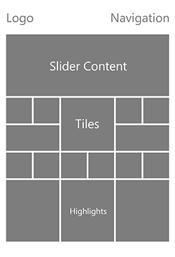
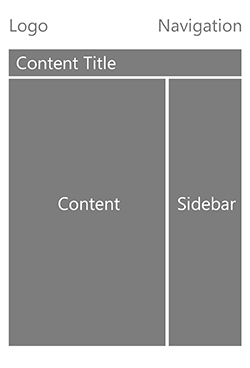
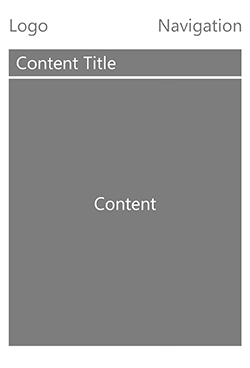
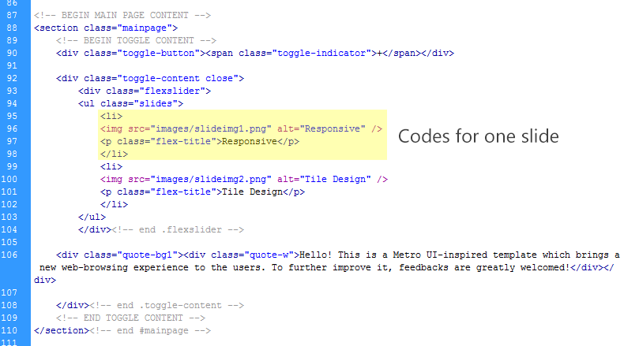
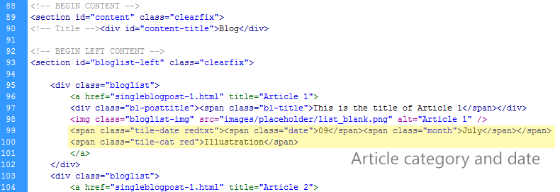
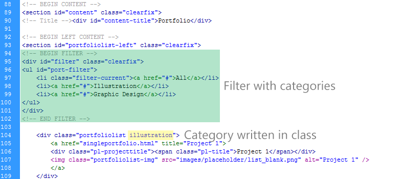
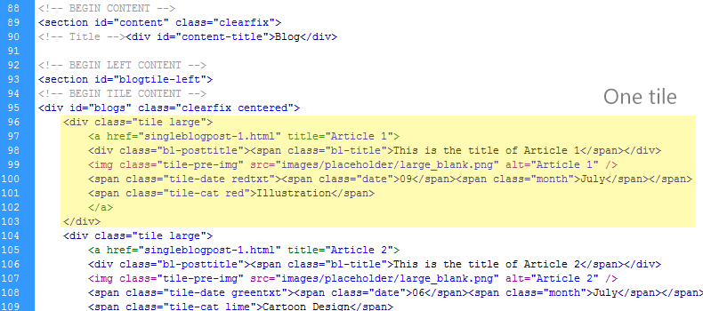
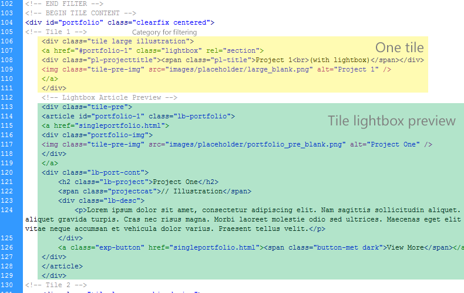
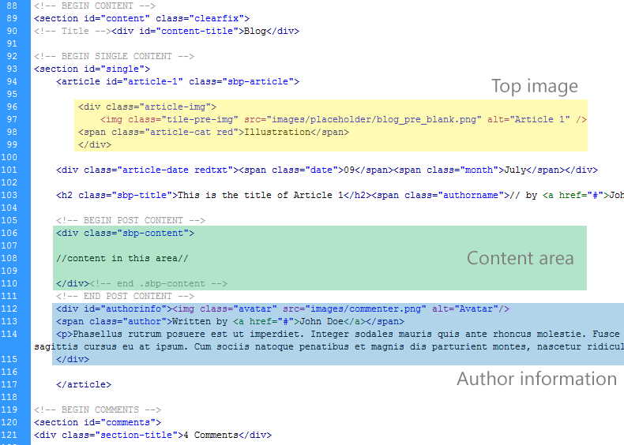
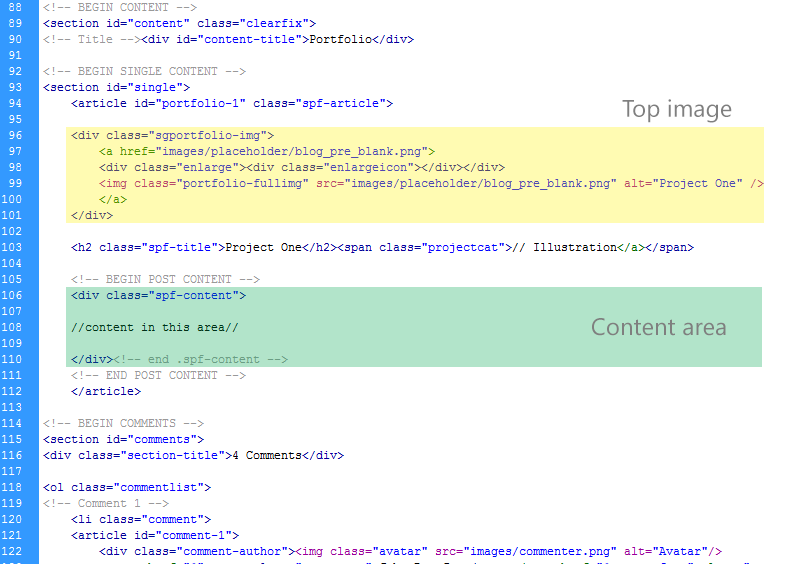

Created: 08/08/2012
By: Billy Foo
Email: billy.foo@outlook.com
Thank you for purchasing my theme. If you have any questions that are beyond the scope of this help file, or any suggestions to improve this template, please feel free to email via my user page contact form here. Thanks so much!
This is a fluid template which focuses on 'tiles' rather than 'columns'. All the pages are HTML5 valid. Generally, there are 3 different template layouts on which the rest of the pages are built upon :
Main Page, Content Page and Pages Layout (left to right)
  Before you start editing, I would recommend using a web diagnostic tool such as Firebug addon for Firefox or built-in diagnostic tool in Safari or Opera
All the files in this template are commented to make editing easier. Throughout this documentation, the lines of codes that I mention refer to the lines in the image only, so you need to find the same / similar lines as they might differ in each files. Besides, these styles will be used in this documentation:
Here are some classes for colors which can be used at anywhere within the template. To use them, just put the class into the element which you want the effect to be applied. For example, to create a red tile, just put .red into div.tile , and you should have <div class="tile red"></div>.
| For background color | For text color | Color sample |
|---|---|---|
| blue | bluetxt | |
| brown | browntxt | |
| green | greentxt | |
| lime | limetxt | |
| magenta | magentatxt | |
| mango | mangotxt | |
| pink | pinktxt | |
| purple | purpletxt | |
| red | redtxt | |
| teal | tealtxt | |
| black | blacktxt | |
| white | whitetxt | |
| themecolor | themecolortxt | Color changes according to the style-color.css used. |
You will need to change //img src// and //name// to your company logo and name.
To create more menu items, just duplicate the codes highlighted in yellow. To create sub-menu, create another list item within the parent menu item, as highlighted in green.
If you want to make a particular menu item highlighted, just add the class .current to the parent menu item's li tag.
You can change the copyright message enclosed between small tags at line 531 to any message you want.
This template comes with 10 default social networking websites' icons. To use them, just key in the corresponding classes for the span tag in #footer-social. You can always add additional icons by yourself, or request for it in the item's discussion page and I will try my best to include them in the latest update. Below is the list of classes available in this template :
You will only need to change the //img src//, and //title// in .flex-title for the slide to your desired values. To add more slides, just repeat the highlighted codes.
If you wish to remove the toggle, you will only need to delete line 90, 92 and 108.
This template uses Flexslider v2.0, so all the settings found here can be applied to the corresponding function located in /scripts/javascript.js (at line 9)
The image above shows all the features embedded in a tile. Each tile uses this formatting. Let's study each component :
<div class="tile small blue">
</div>
<a href="//link//" title="//title//">
<div class="tile small">
</div>
</a>
<div class="tile small live" data-stops="//positions to stop//" data-speed="//time in milliseconds//"
data-direction="horizontal">
<div class="live-front"></div>
<div class="live-back"></div>
</div>
<a href="//id of lightbox element//" class="lightbox">
<div class="tile small">
</div>
</a>
<< the following piece of code can be put anywhere in the page, but I recommend putting it
together as in image above. >>
<div class="tile-pre">
<article id="//id of lightbox element//" class="lb-article">
<< some content for this article >>
</article>
</div>
<div class="tile //one of the 10 colors//">
</div>
<div class="tile exclude">
</div>
Thanks to Drew Greenwell for this wonderful script, all the possible settings and their explanation are listed down here. However, I have also included the attributes which are most likely used by you in the table below :
| Data Attribute | Default Value | Description |
|---|---|---|
| data-mode | slide | Mode of animation. Can be 'slide' or 'flip'. |
| data-stops | 100% | How much should the front tile slide in slide mode before pausing. Setting one stop will make the tile slide between the stop value and 0. If more than one stop is set, the tile will loop through all stop values. Note: If more than one stop is used, you need to set the final stop to 0px if you want the tile to return to the default position. |
| data-speed | 500 | How fast should the animations be performed (in milliseconds). |
| data-delay | 5000 | How long to wait between animations (in milliseconds). Setting the delay value to -1 will use a random delay value between 3500 and 8000 milliseconds (3.5 - 8 seconds). Setting the delay value to anything lower than -1 (e.g. -2) will call the triggerDelay method one time to get the delay value. |
| data-initdelay | -1 | How long to wait before starting (in milliseconds). If the value is -1 the delay property is used |
| data-repeat | -1 | How many times should the animation be performed. If the value is -1 the animations will loop until stopped or paused |
| data-stack | false | Should tiles in slide mode move synchronously as if stacked (e.g Me tile). |
| data-direction | vertical | The direction that tiles slide and flip. (vertical | horizontal) |
You will only need to edit the highlighted codes to suit your needs. Use .fixed-medium to contain each item and also add .last to the last div container (the third container) of each row.
All the files with this layout have 2 main containers (excluding header and footer), which are, left content container (#bloglist-left, #blogtile-left, #portfoliolist-left and #portfoliotile-left) and #sidebar.
Both are quite similar in terms of structure. The only difference is that bloglist contains article category and date, whereas portfoliolist contains category of the item in its class. Also, I have included category filter for portfolio of which I will discuss in detail later. Check out the images below first.
 
<div class="bloglist /or/ portfoliolist">
<a href="//link//" title="//title//">
<div class="bl-posttitle /or/ pl-projecttitle"><span class="bl-title /or/ pl-title">//title//</span></div>
<img class="bloglist-img /or/ portfoliolist-img" src="//img src//" alt="//title//">
</a>
</div>
<div class="portfoliolist">
<a href="//id of lightbox element//" class="lightbox">
<div class="pl-projecttitle"><span class="pl-title">//title//</span></div>
<img class="portfoliolist-img" src="//img src//" alt="//title//"></div>
</a>
</div>
<< the following piece of code can be put anywhere in the page, but I recommend putting it
together as in image above. >>
<div class="tile-pre">
<article id="//id of lightbox element//" class="lb-portfolio">
<< some content for this article >>
</article>
</div>
To add more categories, just add more li items and make sure the name here in the list and in the class of portfolio item are of same spelling. Blank space will be added with - automatically in the filtering system, so make sure you use dashed class name in item list. For example, using 'Graphic Design' in the list would require the portfolio item to have 'graphic-design' in its class.
Once again, they are very similar in structure. In fact, any settings for tiles can be used here, including live tiles and lightbox by using the method as discussed in 'Tile' section. In the sample images below, the tile in portfoliotile has lightbox enabled.
 As you can see, the size of the tiles are defined by applying either .large, .medium or .small to div.tile. The same classes and settings used at the main page can be applied here as well.
As you have probably guessed it, single blog post and single portfolio item's page are almost the same, with minor differences at the top only. Both have the left content area wrapped in section#single tag, then the content itself and comments at the bottom. However, in a single blog post, the top image has to be 640px x 360px, whereas in portfolio, it can be of any size and I recommend putting the full size image of your portfolio item there. A picture tells a thousand words (eventhough it contains words only), so let's take a look at the samples below :  
As the classes for each container are quite self-explanatory, let's focus on the elements which can be used within the content area :
Aside from these, you may also add buttons into the page. Buttons follow a structure like this (this is an example of a 'dark' button) :
<a href="//link//"><span class="button-met dark">//button//</span></a>
You can style each button differently using pre-made classes (examples available at features-content.html page) :
| Dark Theme | Light Theme |
|---|---|
| dark | light |
| dark-blue | light-blue |
| dark-brown | light-brown |
| dark-green | light-green |
| dark-lime | light-lime |
| dark-magenta | light-magenta |
| dark-mango | light-mango |
| dark-pink | light-pink |
| dark-purple | light-purple |
| dark-red | light-red |
| dark-teal | light-teal |
You can also use a slider at the top image to display more than one image for your post. Instead of using the codes shown above, you only need to use the code below :
<div class="article-img">
<div class="flexslider postslide">
<ul class="slides">
<li>
//img here//
</li>
<li>
//img here//
</li>
</ul>
</div>
</div>
All pages have only one container, which is, div#pg-content. Within this container, you can create up to 4 columns by using relevant classes for each container. Below is the list of classes which can be used to create columns:
Note : The last column of each row must have .last.
<div class="one-half">
// content //
</div>
<div class="one-half last">
// content //
</div>
<div class="one-fourth">
// content //
</div>
<div class="three-fourths last">
// content //
</div>
<div class="page-sub-title">
<h1>//Title//</h1>
<div class="tagline">//Some text here, displayed beside title//</div>
</div>
Besides columns, you can also create tabs, tables, toggles and accordions in the content area of pages.
Below is the general structure of tabs
<div id="//id of tabs//"class="orgTab">
<ul class="tab-nav">
<li><a href="//id of tab1//" class="current">Tab 1</a></li>
<li><a href="//id of tab2//">Tab 2</a></li>
</ul>
<div class="list-wrap">
<div id="//tab1//">
//content//
</div>
<div id="//tab2//" class="hide">
//content//
</div>
</div>
</div>
Once you have written these in your HTML file, you must also add $("//id of tabs//").organicTabs(); at javascript.js file. The .hide class is used to hide all tabs other than the one visible when the page is loaded. For tabs containing p tags, you need to use .p-tab at the div of the tab in order to have correct spacing. For tabs containing ul li (list item), you need to add .list-item-tab at the tab div for the same reason.
If you wish to style it differently, you may add specific id and classes to each tab or tab content. The 'Articles' tab at the sidebar is an example of different styling for each tab in which you can refer to.
Below is the general structure of tables
<div class="table-content">
<div class="table-title">//title//</div>
<div class="table-price">
<span class="price"><span class="price-pre">//currency//</span>//amount//
<span class="price-post">//duration//</span>
</div>
<div class="table-info">
<ul>
<li>//content//</li>
<li>//content//</li>
</ul>
</div>
</div>
To make a 2-columned table, just put each table in each of the div.one-half ; 3-columned table in each of div.one-third.
All toggles have a structure like this :
<div class="toggle-button">//toggle title//<span class="toggle-indicator">-</span></div>
<div class="toggle-content">
//content//
</div>
If you wish to create a toggle which is closed when loaded, you need to add .close to div.toggle-content and change the - sign at span.toggle-indicator to + sign, as shown below.
<div class="toggle-button">//toggle title//<span class="toggle-indicator">+</span></div>
<div class="toggle-content close">
//content//
</div>
Accordions have almost the same structure as tabs, except that they have another containing div with class .accordion. Similarly, the tabs which should be closed when loaded have the .close class. Check out the structure of accordions :
<div class="accordion">
<div class="ac-tab">//toggle title//<span class="toggle-indicator">-</span></div>
<div class="toggle-content">
//content//
</div>
<div class="ac-tab">//toggle title//<span class="toggle-indicator">+</span></div>
<div class="toggle-content close">
//content//
</div>
</div>
If you still have any questions, feel free to voice it up in the item discussion or contact me. I will do my best to assist you
I am using 3 CSS files for this theme. style.css is the core CSS file which defines the styles of the template, whereas style-ie8.css is used to fix some IE8 bugs. The third CSS file is named style-//color//.css, where //color// is the theme color. You can use any of the 10 pre-made colors or create your own one by changing all the color hex values in the color CSS file.
To change the color loaded on a page, you just need to change the style-blue.css file to your desired CSS file, and the code is located at line 7 of all HTML files in this template.
The core CSS file is separated into sections using:
/*----------------------------------------------- Header -----------------------------------------------*/ some code /*------------ --Mobile Version----------------*/ some code /*----------------------------------------------- Navigation -----------------------------------------------*/ some code /*------------ --Mobile Version----------------*/ some code /*----------------------------------------------- Content -----------------------------------------------*/ some code /*------------ --Mobile Version----------------*/ some code /*----------------------------------------------- Footer -----------------------------------------------*/ some code /*------------ --Mobile Version----------------*/ some code etc, etc.
If you would like to edit a specific section of the site, simply find the appropriate label in the CSS file, and then scroll down until you find the appropriate style that needs to be edited.
This theme imports a few Javascript files :
| Javascript File | Author | Licence | Link |
|---|---|---|---|
| css3-mediaqueries | Wouter van der Graaf | MIT | http://code.google.com/p/css3-mediaqueries-js/ |
| hoverintent | Brian Cherne | MIT & GPL | http://cherne.net/brian/resources/jquery.hoverIntent.html |
| jquery.easing.1.3 | George Smith | BSD | http://gsgd.co.uk/sandbox/jquery/easing/ |
| jquery.fancybox-1.3.4 | Janis Skarnelis | MIT & GPL | http://fancybox.net/ |
| jquery.flexslider-min | WooThemes | GPL | http://www.woothemes.com/flexslider/ |
| jquery.masonry.min | David DeSandro | MIT | http://masonry.desandro.com/ |
| MetroJs.lt | Drew Greenwell | MIT | http://drewgreenwell.com/projects/metrojs |
| organictabs.jquery | Chris Coyier | http://css-tricks.com/organic-tabs/ |
To change the twitter widget account, navigate to line 107 in scripts/javascript.js. Change the username to your username and the number of tweets to be displayed to any number you want.
I've used the following images, icons or other files as listed.
| Javascript File | Author | Licence | Link |
|---|---|---|---|
| css3-mediaqueries | Wouter van der Graaf | MIT | http://code.google.com/p/css3-mediaqueries-js/ |
| hoverintent | Brian Cherne | MIT & GPL | http://cherne.net/brian/resources/jquery.hoverIntent.html |
| jquery.easing.1.3 | George Smith | BSD | http://gsgd.co.uk/sandbox/jquery/easing/ |
| jquery.fancybox-1.3.4 | Janis Skarnelis | MIT & GPL | http://fancybox.net/ |
| jquery.flexslider-min | WooThemes | GPL | http://www.woothemes.com/flexslider/ |
| jquery.masonry.min | David DeSandro | MIT | http://masonry.desandro.com/ |
| MetroJs.lt | Drew Greenwell | MIT | http://drewgreenwell.com/projects/metrojs |
| organictabs.jquery | Chris Coyier | http://css-tricks.com/organic-tabs/ |
Once again, thank you so much for purchasing this theme. As mentioned earlier, I would be glad to help you if you have any questions relating to this theme. No guarantees, but I'll do my best to assist. If you have a more general question relating to the themes on ThemeForest, you might consider visiting the forums and asking your question in the "Item Discussion" section.
Billy Foo